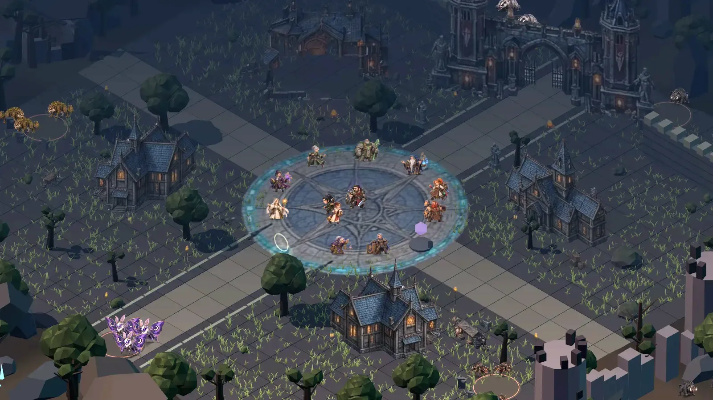
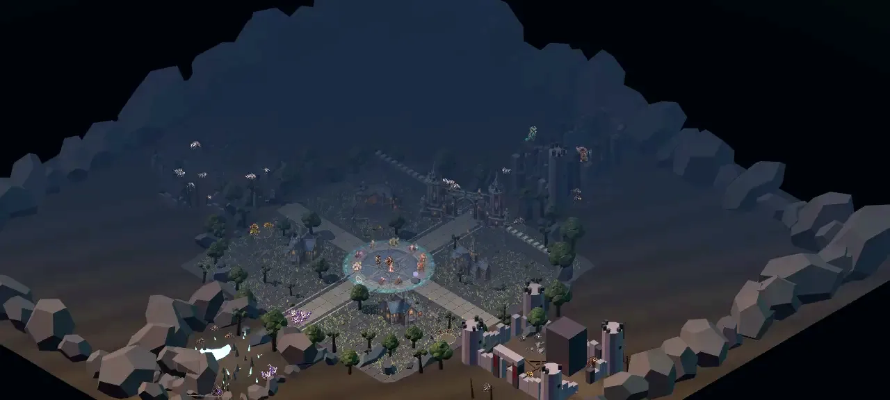
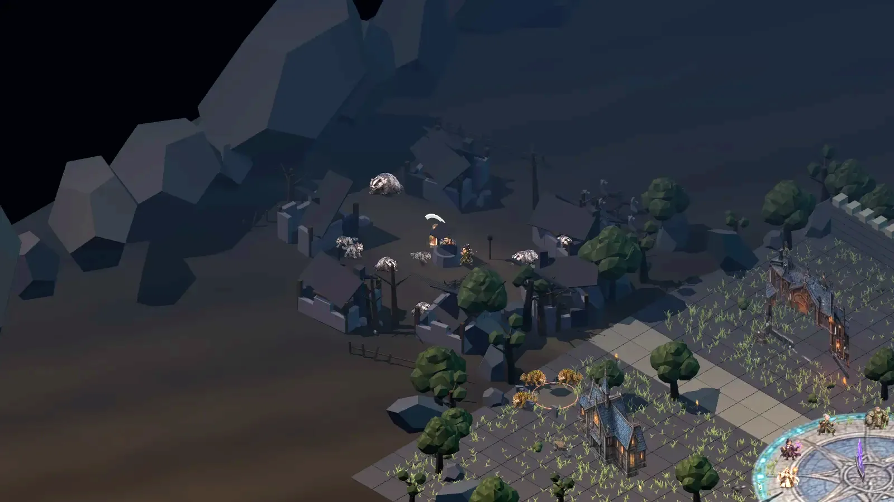
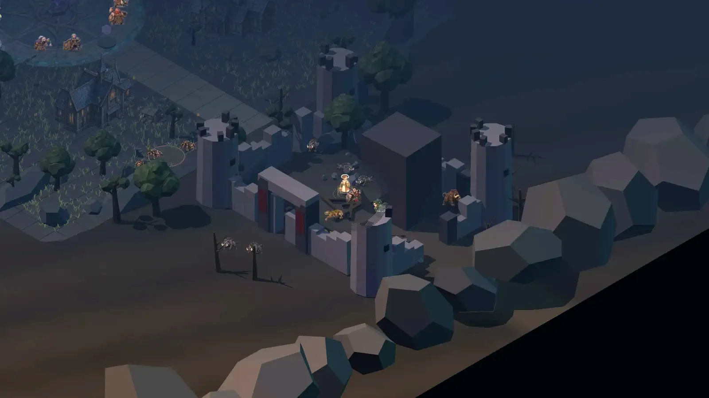
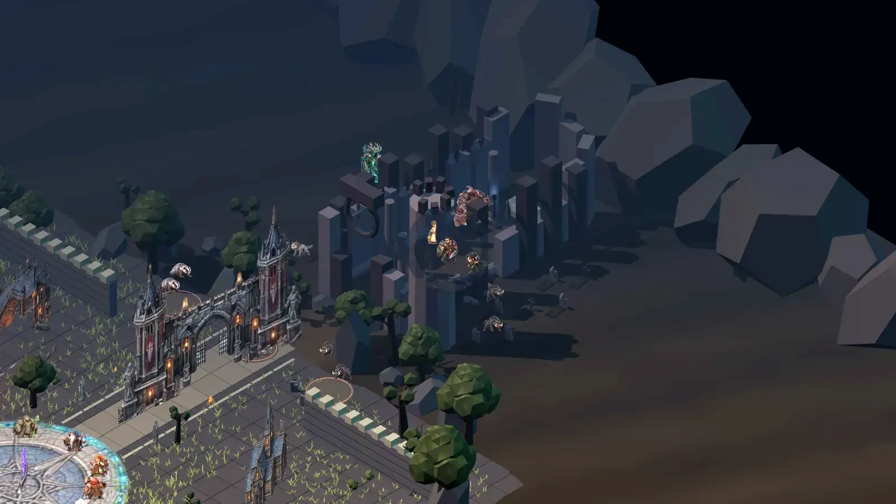
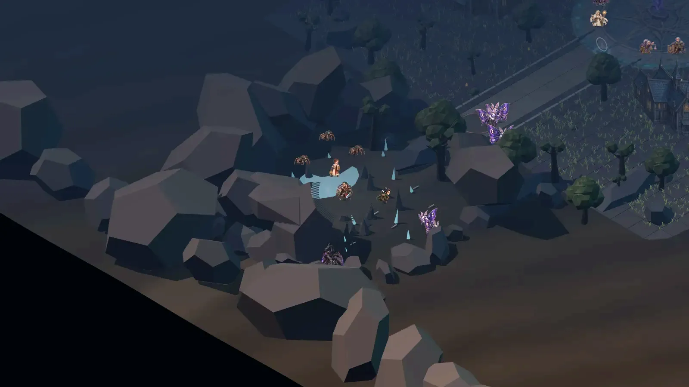
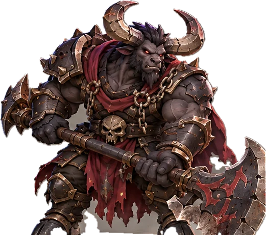
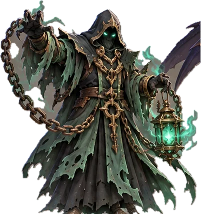
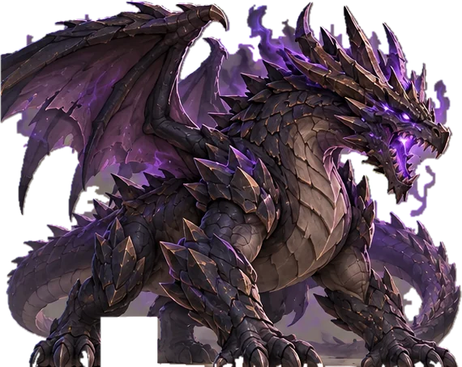
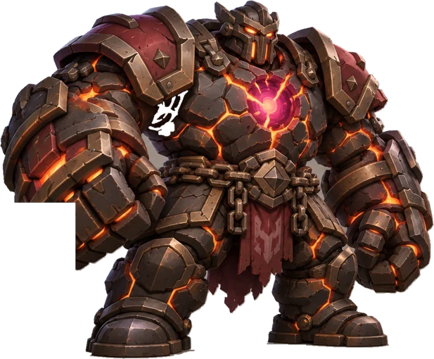

Warriorนักรบ
แทงค์แนวหน้า ดาบและโล่ ฟันคอมโบ 3 จังหวะ ยกโล่ลดความเสียหาย
การปกป้องเพื่อนพ้องคือหน้าที่ของข้า

สเตตัสพื้นฐานตายตัวตามอาชีพ — ความต่างมาจากอุปกรณ์ ออปชัน และการเล่น
แทงค์แนวหน้า ดาบและโล่ ฟันคอมโบ 3 จังหวะ ยกโล่ลดความเสียหาย
การปกป้องเพื่อนพ้องคือหน้าที่ของข้า


ดาเมจเวทระยะไกล ร่ายสกิลใหญ่ ระเบิดพื้นที่ แช่แข็ง พายุ
เวทย์มนต์คือสิ่งที่สูงส่งในดินแดนต้องสาปแห่งนี้


ฮีลเลอร์ รักษาตนเอง เพื่อน หรือทั้งปาร์ตี้ และพิพากษาด้วยแสง
พรแห่งพระเป็นเจ้าจะอยู่ข้างข้าตลอดไป


ระยะไกลกายภาพ ยิงเร็ว หรือง้างสายจนเต็มเกจยิงแรง ×3
ธนูของข้าไม่เคยพลาดเป้าแม้แต่ครั้งเดียว


บัฟเฟอร์ จารึกรูนเพิ่มพลังเพื่อน 30 นาที ลดพลังศัตรู
คาถาของข้ามีเพื่อเพิ่มพูนพลังให้แก่เจ้า
Sorrowlands — ซากหมู่บ้าน ปราสาท มหาวิหาร และถ้ำรอบ Hollow Reach คือพื้นที่ล่ามอนสเตอร์ แต่ละเขตมี Elite ที่มีสกิลของตัวเอง


หมู่บ้านชาวนาที่ถูกทิ้งร้างในคืนสุริยคราส บ้านเรือนหลังคาพัง บ่อน้ำแห้ง และรั้วไม้ผุ — เสียงหมาป่าเถ้าถ่านดังทุกคืน

ป้อมชายแดนที่ถูกเผาจนเหลือแต่หอคอยครึ่งซีกและกำแพงดำ หมูป่าและหมาป่าหนามยึดลานฝึกเป็นรัง

มหาวิหารที่หลังคาถล่มลงทับผู้สวดภาวนา ระฆังยังดังเองทุกเที่ยงคืน และ Grave Marshal ตื่นขึ้นท่ามกลางหลุมศพของอัศวิน

ถ้ำหินที่ผลึกสีฟ้าเรืองแสงหยดน้ำตาลงไม่หยุด แมงมุมหนามและผีเสื้อจันทร์ทำรังในความมืด
เลือดบอสปรับตามจำนวนผู้ท้าชิง ออกแบบให้ใช้เวลา 15–30 นาที · จบแล้วจัดอันดับดาเมจ 10 อันดับ อันดับ 1 มีโอกาส 50% ได้ไอเทมระดับสูง

จอมพลแห่งหลุมศพ — มหาวิหารแห่งเสียงร่ำไห้

มหาปุโรหิตผู้จมน้ำ — อารามจมน้ำแห่ง Dawnveil

ผู้กลืนกินรากโลก — ดินแดนรกร้างใจกลาง Sorrowlands

ไททันเตาหลอมนรก — ลานโรงหลอมฝั่งตะวันตกของ Hollow Reach (ออนไลน์)
ใช้ SoulGod และวัตถุดิบเพิ่มขึ้นตามระดับ · Legendary 75% · God 70% · Pre-arch 60% · Arch 45% · พลาดได้คริสตัลสีตามระดับ ครบ 3 เม็ด = สำเร็จ 100% เลือกอาชีพและประเภทได้
ตั้ง % ดื่มยา กินอาหารบัฟ เปิด/ปิดสกิลทีละช่อง · Priest/Enchanter เลือกได้ว่า เน้นโจมตี / เน้นซัพพอร์ต / ควบคู่
ชุดไทยขาวทอง — สวมแล้วเปลี่ยนรูปลักษณ์ทั้งเดิน วิ่ง โจมตี ร่ายสกิล ใส่ได้ทุกอาชีพ
13 เควสเรื่องหลักพาตั้งแต่ตื่นในวิหารจนถึงล้ม Grave Marshal พร้อมคำแนะนำที่ขึ้นครั้งเดียว
Closed Beta — ลงทะเบียนด้วยโค้ดเชิญ